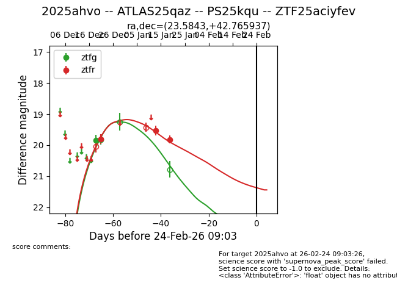
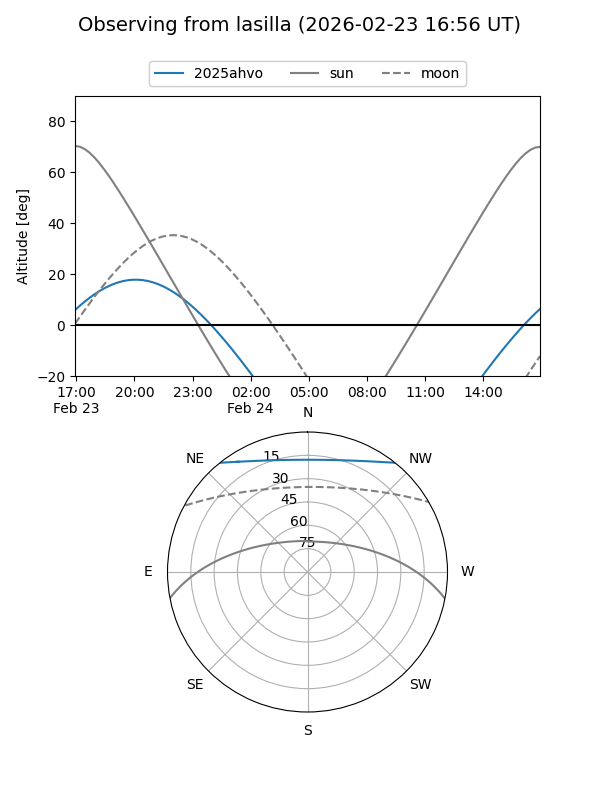
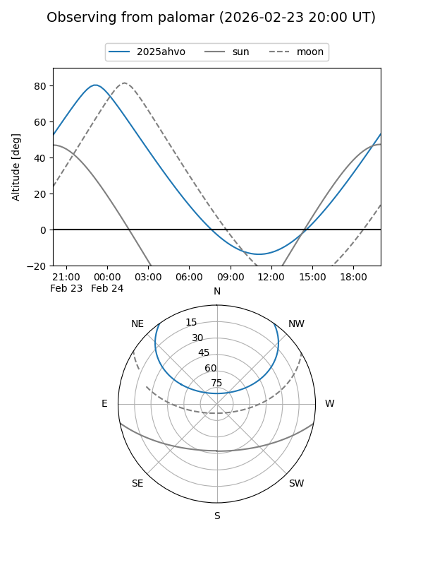
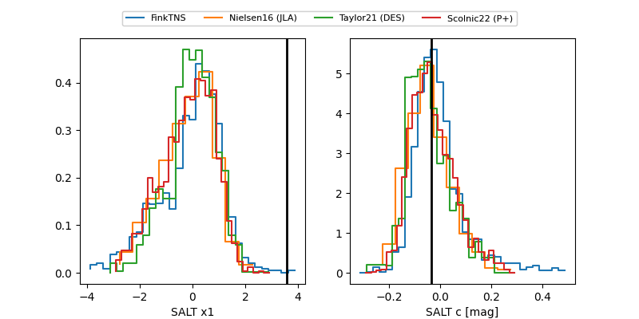

2025ahvo
Target 2025ahvo at 2025-12-31 18:00
Aliases and brokers:
FINK: link
Lasair: link
ALeRCE: link
TNS: link
YSE: link
alt names
ZTF25aciyfev (ztf,fink_ztf)
2025ahvo (tns,yse)
ATLAS25qaz (atlas)
PS25kqu (panstarrs)
Coordinates:
equatorial (ra, dec) = 23.5843,+42.76594
equatorial (HMS+DMS) = 01:34:20.23,+42:45:57.37
galactic (l, b) = (131.2605,-19.41099)
Flags:
Photometry:
last ztfg=19.82, ztfr=19.81
2 ztfg, 1 ztfr detections
Lightcurve

Visibility


Additional plots
